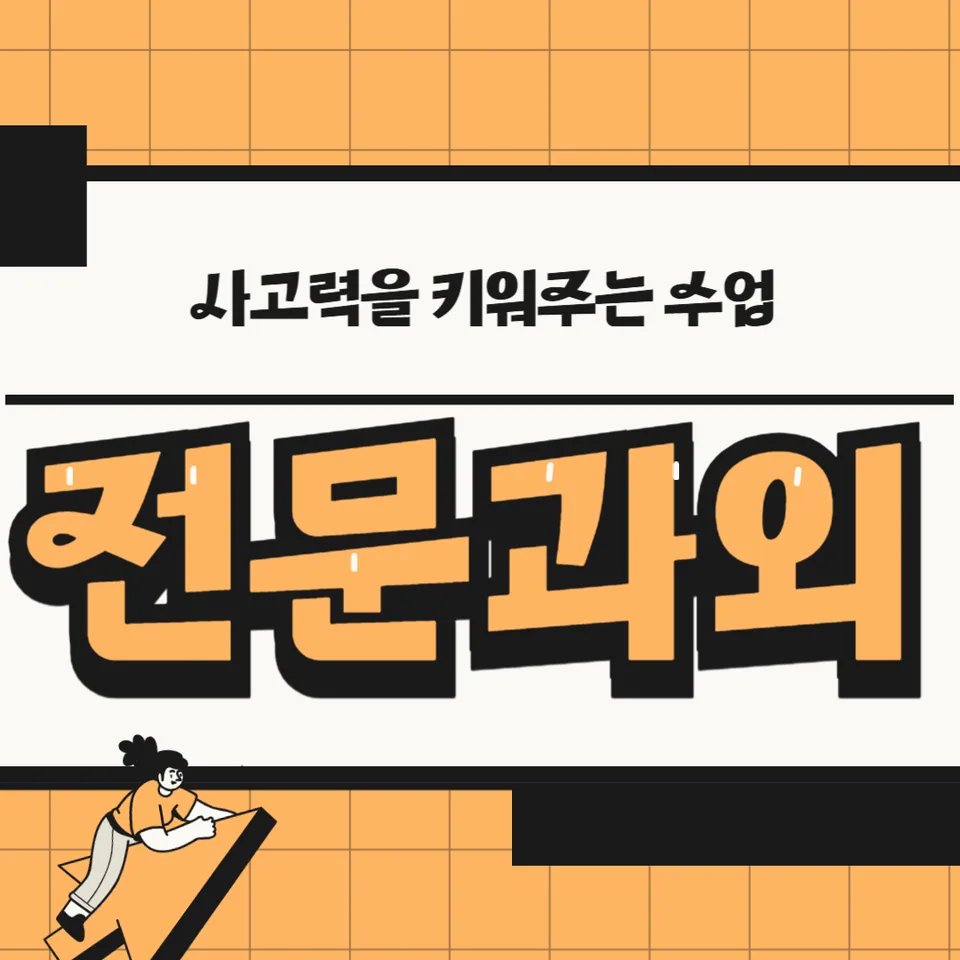

PageType : DONG
URL : /경기도과외/안산시과외/상록구과외/성포동과외/
지역 학습환경과 학생들의 변화
성포동과외를 시작한 학생들은 대부분 “숙제는 했는데 왜 불안한지 모르겠다”는 표정을 먼저 보입니다. 같은 동네 학습공간에서도 수업 시간에 필기 습관이 잡히기 시작하면, 수업 뒤에 남는 시간이 단순 암기가 아니라 복습 루틴으로 바뀝니다. 특히 성포동과외는 학습 태도가 흐트러지는 순간을 빠르게 잡아, 수업 후 10분 정리와 오답 정리의 순서를 고정합니다. 그러면서 내신 과목에서 점수가 오르기 전부터, 시험 직전에도 멈추지 않고 꾸준히 돌아가는 공부습관이 형성됩니다.
지역 학습환경은 생각보다 생활 패턴을 따라 움직입니다. 등교 전후 컨디션이 흔들리는 학생은 수업 도중 집중이 들쭉날쭉해지는데, 성포동과외에서는 수업의 마무리를 ‘다음 행동’으로 끝내서 다음 날에도 이어지게 합니다. 결과적으로 학생이 공부를 “해야 하는 일”이 아니라 “지금 할 수 있는 일”로 바꾸는 변화가 나타납니다. 이 과정이 누적되면 문제를 처음 보는 낯섦이 줄어들고, 풀이 속도보다 정확성이 먼저 안정화됩니다.
학부모가 많이 고민하는 부분
학부모들은 대체로 성적보다 공부의 방향이 흔들릴 때 더 불안해합니다. 예를 들어, 숙제를 다 해오는데도 시험에서 같은 유형이 반복해서 틀린 경우가 자주 생기는데, 성포동과외에서는 “무엇을 왜 틀렸는지”를 학생이 말로 설명하게 만들며, 오답의 성격을 분류해 둡니다. 그 후에는 학부모가 지도하려고 앉히는 방식이 아니라, 가정에서 확인할 항목을 최소화해 부담을 줄입니다.
또한 시험기간이 가까워지면 하루 계획이 너무 거창해져 실패하는 경우가 많습니다. 이때 성포동과외는 계획을 줄이는 대신 실행 단위를 작게 쪼개고, 실제 시험과 연결되는 과제만 남깁니다. 학생이 “오늘은 뭘 했는지”를 명확히 말할 수 있게 되면, 학부모가 밤마다 확인하는 질문도 자연스럽게 줄어듭니다. 결국 학부모 고민의 핵심이 통제에서 관찰로 옮겨가며, 학생의 태도가 더 단단해집니다.
학년이 올라갈수록 달라지는 공부
학년이 올라가면 공부는 양보다 구조가 달라집니다. 중간·기말의 비율이 커지고, 서술형 비중이 생기면서 단순 문제풀이가 성적을 보장하지 않기 때문입니다. 성포동과외는 학년별 변화에 맞춰 자료를 바꾸기보다, 학생이 접근하는 순서를 먼저 정리합니다. 개념을 끝낸 뒤 문제로 넘어가는 흐름이 아니라, 틀리는 지점부터 개념을 재구성하도록 설계합니다.
특히 학년이 바뀌는 시기에는 공부 분위기가 한순간에 꺾일 수 있습니다. 새로운 교과 진도에 따라 속도가 벌어지고, 학생이 “따라갈 수 없다”는 감정을 먼저 갖는 경우가 있습니다. 그래서 성포동과외에서는 첫 주 진단을 통해 현재 수준을 고정하고, 격차를 줄이는 방식으로 학습 태도를 회복시킵니다. 시험은 결국 누적이기에, 작은 성취가 쌓이는 구간을 빨리 만들어 자신감을 회복하게 합니다.
학교생활과 내신 준비
내신은 수업 태도와 직결됩니다. 수업 중 필기와 질문이 생기는 학생은 시험에서 같은 단원이라도 문장을 더 정확히 붙잡습니다. 학교생활에서 성취도가 흔들리는 학생은 수업 후 바로 정리가 안 되어 교과서의 문장이 의미를 잃습니다. 성포동과외에서는 수업 내용을 ‘시험 포인트’로 연결해, 교과서 문단-문제-서술형 표현을 한 줄로 이어 보게 합니다.
시험 준비는 단기간에만 몰아서는 효과가 떨어집니다. 성적이 안정적인 학생들은 시험 직전에도 기본 문제를 반복하되, 그 반복이 새로운 틀에서 이뤄집니다. 내신 준비 과정에서 성포동과외는 개념 확인-유형 적용-오답 점검의 흐름을 시험 일정에 맞춰 재배치합니다. 결과적으로 학생은 시험이 다가올수록 오히려 차분해지고, 학부모에게 “이번 범위는 뭐부터 해야 해요?”라고 묻는 횟수도 늘어납니다.
자기주도학습이 중요한 이유
자기주도학습은 의지가 아니라 시스템입니다. 시간이 생길 때만 공부하는 학생은 성적이 흔들리고, 시험마다 같은 실수를 반복합니다. 성포동과외는 학생이 스스로 다음 행동을 정하게 만드는 데 초점을 둡니다. 예를 들어 공부 계획을 거창한 달력으로 끝내지 않고, 매일 체크해야 할 3가지를 고정합니다. 그 체크는 “문제 수”가 아니라 “습득 과정”에 맞춰져 있습니다.
자기주도학습이 자리 잡으면 학생의 태도에도 변화가 생깁니다. 풀이를 먼저 시작하는 학생은 어느 순간부터 왜 틀렸는지 설명을 시도하고, 설명이 되기 시작하면 다음 문제의 관찰력이 자라납니다. 성포동과외에서는 학습 태도를 점검할 때 ‘정답률’만 보지 않고, 과정 기록과 오답의 언어화 여부를 함께 확인합니다. 이 습관이 쌓이면서 시험 전날에도 무리한 압축 없이 계획된 복습을 수행합니다.
공부 습관이 성적에 미치는 영향
공부습관은 성적을 바꾸는 속도가 빠릅니다. 특히 같은 시간 공부해도 결과가 다른 이유는 집중의 질과 복습의 타이밍 차이에서 발생합니다. 성포동과외는 처음부터 완벽한 루틴을 요구하지 않습니다. 대신 학생이 지킬 수 있는 수준에서 시작해, 매주 ‘정리 습관’과 ‘오답 습관’을 조정합니다. 그러면 성적이 오르는 시점도 빨라집니다.
학생을 보면 시험 직전 태도가 먼저 달라집니다. 불안한 학생은 문제를 풀면서도 마음이 산만해지는데, 성포동과외에서는 시간관리 훈련을 통해 분량을 ‘시간 단위’로 통제하게 합니다. 그 후에는 시험에서 흔들리는 서술형이나 문제풀이 설명에서 문장 구조가 더 명확해집니다. 결국 공부습관은 점수뿐 아니라 시험장에서의 결정 속도까지 바꿉니다.
체크해야 할 학습 포인트
성포동과외를 받든 혼자 공부하든, 아래 포인트를 확인해야 내신과 시험 대응이 자연스럽게 됩니다.
- 수업 후 10분 정리: 오늘 개념을 문장으로 바꾸었는지 확인
- 오답 재풀이 방식: 같은 틀을 반복하기보다 원인을 다시 체크하는지
- 시험기간 시간관리: 하루 학습량보다 시간 배분이 흔들리지 않는지
- 자기주도학습 기록: 계획-실행-피드백이 연결되는지
이 항목들은 성포동 학생들에게 특히 도움이 됩니다. 학습이 빠르게 진행되는 시기에 오히려 흔들리기 쉬운 부분이라, 체크가 늦어지면 성적 격차가 더 크게 벌어지기 때문입니다.
성포동 학습 분위기와 지역 특성
성포동은 생활 리듬이 비교적 분명한 편이라, 공부도 ‘언제’ 하느냐가 결과를 좌우합니다. 등하교 시간에 맞춰 짧게라도 복습을 끼우면, 주말에 몰아서 하는 학생보다 내신이 더 안정적으로 나옵니다. 성포동과외는 학생의 하루 패턴을 기준으로 과목 선택과 시간표를 조정합니다. 예컨대 수학은 주중에 유형을 짧게 돌리고, 국어·영어는 서술형 대비나 어휘 복습을 반복 가능하게 배치합니다.
또한 지역 학습 분위기가 강해질수록 학생은 비교에 쉽게 지칩니다. “다들 하는 것 같아서 나도 해야 한다”는 흐름이 생기면 오히려 공부 분위기가 흐트러집니다. 성포동과외에서는 성적 경쟁보다 내 학습 태도를 기준으로 목표를 재설정합니다. 그러면 시험 전날의 불안이 줄고, 학생이 자신의 속도로 회복하는 법을 배웁니다.
자주 묻는 질문
성포동과외는 어떤 학생에게 가장 효과가 있나요?
숙제를 해도 내신 점수가 들쭉날쭉한 학생, 시험이 가까워질 때만 공부가 급해지는 학생, 공부습관이 쉽게 무너지는 학생에게 특히 잘 맞습니다.
내신 준비는 시험 직전에만 해도 되나요?
시험기간에 집중은 필요하지만, 내신은 수업-복습-오답의 누적이므로 평소에 자기주도학습 루틴을 만들어야 흔들림이 줄어듭니다.
과목 선택은 어떻게 정하나요?
현재 성적보다 틀리는 원인을 보고 배분합니다. 성포동과외에서는 취약 단원과 학습 태도를 함께 확인해 우선순위를 정합니다.
학년이 올라가면 수업 방식이 바뀌나요?
네, 학년 변화에 맞춰 개념 확인 방식과 문제풀이 구조를 조정합니다. 서술형·시간관리 비중도 단계적으로 늘립니다.
학부모는 무엇을 확인하면 좋을까요?
정답 여부보다 ‘정리했는지, 오답을 원인으로 다시 봤는지, 시간 배분이 무너지지 않았는지’를 중심으로 체크하면 효과가 큽니다.
